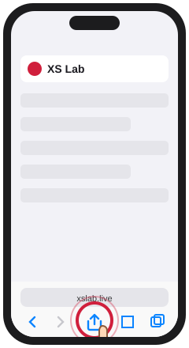
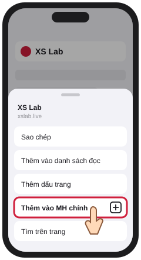
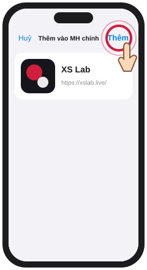
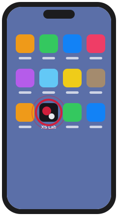
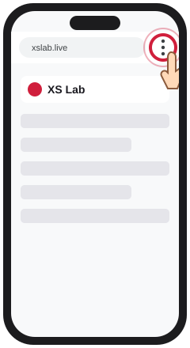
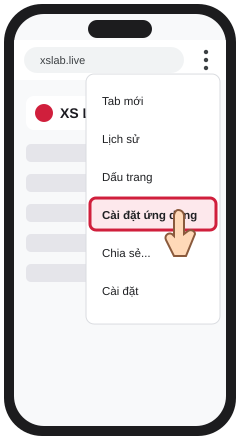
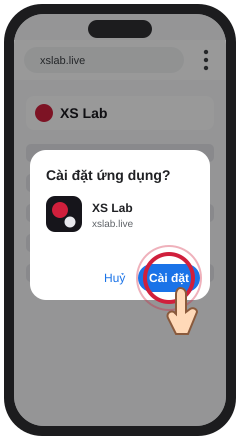

Cài XS Lab lên điện thoại
XS Lab có thể cài lên màn hình chính điện thoại như một ứng dụng: chạm biểu tượng là mở ngay kết quả xổ số, toàn màn hình, không thanh địa chỉ, không quảng cáo. Không cần tải từ App Store hay Google Play, không tốn dung lượng và luôn là bản mới nhất.
Cài một lần, trải nghiệm trọn vẹn
iPhone, iPad (Safari)




Nếu đang mở XS Lab trong Zalo, Facebook hay Messenger, hãy bấm dấu ba chấm và chọn Mở bằng Safari trước, vì trình duyệt trong các ứng dụng này không có chức năng thêm vào màn hình chính. Trên iPhone, Chrome cũng làm được: bấm nút Chia sẻ cạnh thanh địa chỉ rồi chọn Thêm vào MH chính.
Android (Chrome)



Nếu thấy nút Cài đặt màu đỏ trên XS Lab hoặc ở đầu trang này, bấm vào đó là cài ngay, không cần làm theo các bước trên.
Câu hỏi thường gặp
- Có mất phí không? Không. XS Lab miễn phí và không quảng cáo.
- Có cần cập nhật không? Không. Mỗi lần mở là bản mới nhất, kết quả cập nhật ngay sau giờ quay.
- Có truy cập dữ liệu trên điện thoại không? Không. XS Lab không yêu cầu quyền truy cập danh bạ, ảnh hay vị trí; số bạn lưu trong Vé của tôi chỉ nằm trên chính máy của bạn.
- Gỡ thế nào? Nhấn giữ biểu tượng XS Lab và chọn Xoá, như mọi ứng dụng khác.
Thông tin và kết quả xổ số trên XS Lab được chúng tôi cập nhật từ nguồn công khai và chỉ mang tính chất tham khảo. Vui lòng kiểm tra lại kết quả chính thức được công bố bởi các công ty xổ số kiến thiết.